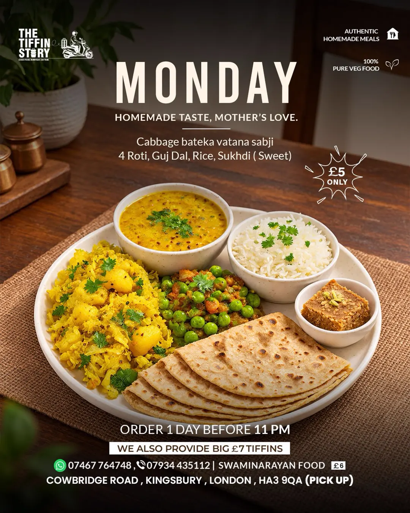

Homemade tiffin service · Kingsbury, London
Authentic homemade food, served everyday.
Chasing dreams in London — but still missing ghar jevu jamvanu. The Tiffin Story cooks 100% pure-veg tiffins the way home tastes: fresh sabji, soft rotis, dal and rice, made every day.
- £5 tiffins
- Order by 11 pm the day before
- Closed Saturdays

Monday's thali — homemade taste, mother's love. Photo: @the_tiffin_story_london
Our story
Far from home, cooking like home.
"Chasing dreams in London. But still missing ghar jevu jamvanu — we serve authentic food, homemade, everyday."
The Tiffin Story is a small home kitchen on Cowbridge Road, Kingsbury, cooking the food its makers grew up with: Gujarati sabjis, soft rotis and parathas, dals, khichdi, and a sweet to finish. Every tiffin is 100% pure vegetarian, cooked fresh the same day it goes out.
There's no shopfront and no app — just a weekly menu posted on Instagram, orders taken on WhatsApp, and pickup from Kingsbury. Simple, honest, and made like it's for family.
Every tiffin is fully vegetarian, cooked in a home kitchen.
A different menu every day — sabji, roti, dal, rice and a sweet.
Honest home cooking at an honest price. Bigger £7 tiffins too.
Simple pricing
One honest price.
As posted on their menu boards — no hidden extras.
Regular tiffin
Sabji, roti/paratha, dal, rice — and a sweet on most days.
£5Big tiffin
A larger tiffin for bigger appetites.
£7Swaminarayan food
Prepared per Swaminarayan dietary practice.
£6Prices as published on The Tiffin Story's own menu boards.
How to order
Tiffin in three steps.
-
Check the week's menu
The new menu goes up on Instagram every week — see what's cooking each day.
-
WhatsApp your order by 11 pm
Message 07467 764748 the day before — that's the order window.
-
Pick up in Kingsbury
Collect your tiffin from Cowbridge Road, Kingsbury, London HA3 9QA.
Please note: The Tiffin Story is closed on Saturdays.
Get in touch
Order, or just say hello.
The fastest way to book a tiffin is WhatsApp — the number below is the one on their menu boards.